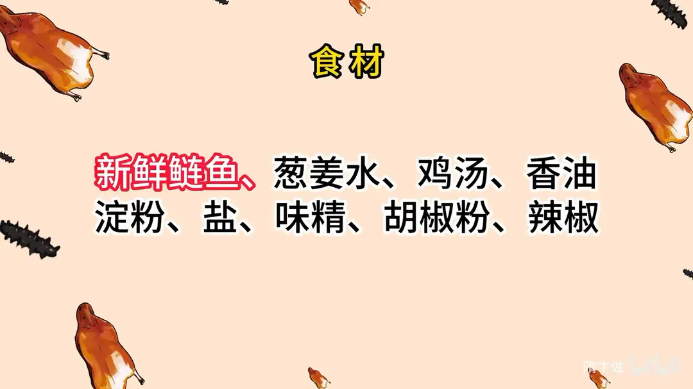
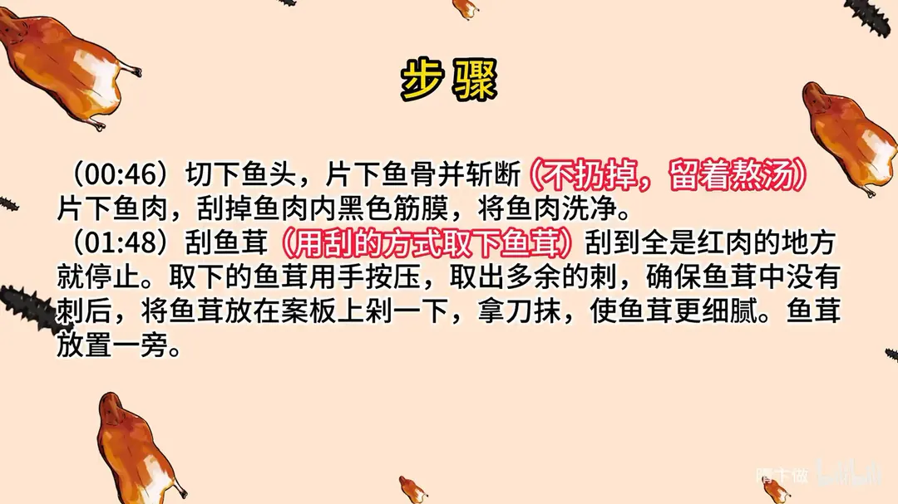
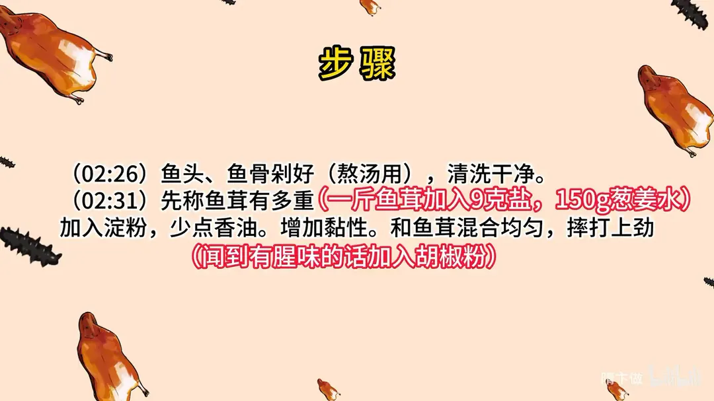
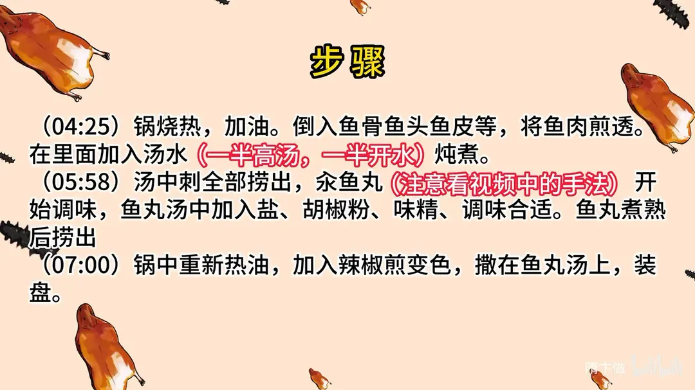

鱼骨汆鱼丸
隋卞一做。一条新鲜鲢鱼拆成三用：鱼头鱼骨煎透熬汤，鱼肉刮成鱼茸，一斤鱼茸配 9g 盐、150g 葱姜水摔打上劲汆成丸，汤里只调盐、味精、胡椒粉。
原视频：https://www.bilibili.com/video/BV1Y24y1A74M
食材
新鲜鲢鱼、葱姜水、鸡汤 等 9 样
| 类别 | 用料 | 用量 |
|---|---|---|
| 主料 | 新鲜鲢鱼 | 适量 |
| 鱼茸 | 葱姜水 | 150g/斤鱼茸 |
| 鱼茸 | 盐 | 9g/斤鱼茸 |
| 鱼茸 | 淀粉 | 适量 |
| 鱼茸 | 香油 | 少许 |
| 汤 | 鸡汤 | 适量（一半高汤、一半开水） |
| 调味 | 味精 | 适量 |
| 调味 | 胡椒粉 | 适量 |
| 浇头 | 辣椒 | 适量 |
步骤
- 拆鱼：切下鱼头，片下鱼骨并斩断，不扔掉、留着熬汤；片下鱼肉，刮掉鱼肉内的黑色筋膜，将鱼肉洗净。
- 刮鱼茸：用刮的方式取下鱼茸，刮到全是红肉的地方就停止；取下的鱼茸用手按压，取出多余的刺，确认没有刺后放在案板上剁一下，拿刀抹，使鱼茸更细腻。
- 剁鱼骨：鱼头、鱼骨剁好，熬汤用，清洗干净。
- 调味打劲：先称鱼茸有多重，一斤鱼茸加入 9g 盐、150g 葱姜水，加入淀粉、少点香油增加黏性，和鱼茸混合均匀，摔打上劲；闻到有腥味的话加入胡椒粉。
- 熬汤：锅烧热，加油，倒入鱼骨、鱼头、鱼皮等，将鱼肉煎透；在里面加入汤水，一半高汤、一半开水，炖煮。
- 汆丸调味：汤中的刺全部捞出，汆鱼丸，开始调味，鱼丸汤中加入盐、胡椒粉、味精，调味合适；鱼丸煮熟后捞出。
- 泼辣椒：锅中重新热油，加入辣椒煎变色，撒在鱼丸汤上，装盘。
讲解要点
难度：★★★★☆（一条鱼拆成汤和丸子两用，重点是刮茸去刺、打劲和熬出奶白汤）
为什么这么做
- 鱼越新鲜越好：新鲜的鱼腥味轻，后期不用拿葱姜水硬压；肚内黑膜多的鱼生长环境差、土腥味重，买到这种要提前用葱姜水泡。
- 黑筋膜刮干净、刮茸刮到见红肉就停：筋膜和红肉都是腥味和深色的来源，混进鱼茸里鱼丸发灰发腥；剩下的红肉留着熬汤。
- 鱼骨片下来不能扔、煎透再加水：鱼头、鱼骨、鱼皮才是白汤的味道来源，要煎到全熟出香，加水后大火滚，蛋白质和汤融合，汤才白。
- 鱼茸剁一下、用刀抹，先捏一遍确认没刺：茸越细、口感越密实弹牙；刺要在打茸之前挑干净。
- 一斤鱼茸 9g 盐、150g 葱姜水，淀粉只加一点：盐先把鱼肉里的蛋白打出来，水再进去才吸得住，这是鱼丸能弹的底子；淀粉多了就变成吃淀粉。
- 摔打上劲、手上沾水抹光：摔打让肉泥成胶，挤出来的丸子才成形不散。
- 一半高汤一半开水：纯鱼骨熬出来的汤不够厚不够香，加一半高汤补足厚度；熬的时候闻着腥就再补葱姜。
- 最后泼辣椒：小火把辣椒煸变色、滴一滴香油连油浇上，这是这道菜「有灵魂的那一步」。
容易翻车
- 刮茸时刮到红肉，鱼丸颜色发暗、带腥味。
- 盐和水下得太随意，鱼丸不上劲，下锅就散。
- 鱼骨煎不到全熟就加水，汤白不起来、也不香。
- 汆丸子前刺必须全部捞干净，尤其给老人小孩吃。
- 想更嫩可以加一个煎蛋、清水再加 20%，但那就从「Q 弹版」变成「滑嫩版」了。
热评补充
- 家里没有现成鸡汤的，可以用鸡架、鸡皮先小火熬一锅简易高汤代替，也可以直接全用开水，味道会薄一些但鱼鲜还在。
原片尾卡




原片文案
AI 字幕校准稿
又到新的季度了，老板给我的 KPI 又加了两道菜。我思来想去，长沙广殿渔村那个鱼丸是真不错。我用这个鱼肉是非常非常的新鲜，吃嘴里边它是很弹的，脆嫩咸香。一条鱼把鱼肉取下来做成丸子，鱼头、鱼骨、鱼皮等等，剩下这些料全都给它熬成白汤，汤里面还加了葱和辣椒，那感觉就很湖南了。今天你们和我一块儿，咱把它研究出来。
你们去买鱼的时候，买花鲢和白鲢都可以。还有一些更便宜的，大家会买鱼头，剩下的鱼尾巴，那是最便宜的，而且那个最好用鱼汤，一定要买那个越新鲜的越好，它里边腥味没有那么重。掰开这个鱼肚子里边黑膜特别多的，那个肯定生长环境比较脏，土腥味就特别重，如果你买的是那个，那你就得提前拿葱姜水给它好好地泡一泡。
把鱼头切下来，然后把鱼肉取下来，然后里边的筋膜黑的，这个一定要刮干净。然后把鱼骨给它片一下，把这个肋骨给片下来。鱼骨片下来之后千万不能扔，一会儿还要熬汤呢，离不开它。然后把片完的鱼肉要洗一下。
咱们取这个鱼茸。刮不动了，拿刀背砸一砸。鱼茸用手捏一下，确保没有鱼刺，放着就可以了。刮到这样就行了，下边都是鱼骨了，就不用了，剩下的鱼肉熬汤用。取下来鱼肉咱们倒到案板上剁一下，拿刀抹一下，让那个鱼茸更细腻一些。这种手法就比较传统一点。
我们把剁好的鱼骨头清洗一下，血水要漂干净。然后就是重点了，先称一下鱼茸有多重，一斤鱼茸 9 克盐、150 克水，再来点淀粉。这淀粉主要是增加鱼茸的这种粘性的，不能放太多，放太多了就是吃淀粉了。闻着里面还是有点存留的那种鱼腥味，然后来点胡椒粉。如果您买的鱼特别的新鲜，一点腥味都没有，这一步可以忽略。还要来一点香油，很少一点。然后给他摔打上劲，手上沾点水给它抹光，再放置一会儿。
咱们开始熬鱼汤。把锅烧热，加点干净油，熬鱼汤的猪油是最好的，熬出来汤特别的香。刚才咱们准备葱姜，搁里边，把鱼肉放进去。鱼块放进去之后不用动，它至少也得煎 5 分钟，放心大胆地煎，不能有一点生的地方。煎成这样就全熟了。
咱们加水，我们这加的是一半水、一半鸡汤。当时喝的时候，他这个汤的味还是比较符合的。单纯的鱼肉和鱼骨头还是熬不出来那么香的，所以我判断他肯定里边加了一部分高汤。瞬间加进去，你看这汤就白了。加完这个汤之后，一定要大火地煮，让所有肉中的蛋白质跟汤充分地融合。在熬汤的时候，你得闻一下，里边腥味很重，你就再加点葱姜，根据食材的实际情况进行一个调整。
看过师傅们，他们真的是带骨头熬完了之后直接往里汆鱼丸。来同志们，看看这绝对奶白色的鱼汤，熬到这种程度就可以汆鱼丸了。咱们在汆鱼丸之前，把刺儿全给它捞出来。你们看我的手法，手上要沾点水，咱们汆的这就是有弹性的鱼丸。
好，现在我们开始调味，盐、胡椒粉，要来上十几粒味精。刚刚好了。鱼丸要煮熟了，出锅了。
到这一步，它只是一个很普通的鱼汤汆鱼丸，接下来这一步才是它真正有灵魂的地方。锅里边少量地放入油，把辣椒煸炒一下，只要辣椒变色就可以了，里边要滴上一滴香油，变红了就可以了，把辣椒浇上边。
鱼丸汆好了，来吧。软弹嫩香，把这个香弹满的搁在盘上可以弹起来。好鲜的汤，但是你还能喝出鱼肉那种鲜香味，加上一点点猪油的那个香。丸子是在汤里面汆的，最后这丸子本身也吸收了一点点味。唯一点就算是咱这个辣椒确实够味了。
如果各位同学在家做的时候，可以在最后加料。想要再嫩一点，就可以加一个煎蛋，清水呢可以再加 20%，就做的那种滑嫩的鱼丸；我们做的这个是弹版的，它的鱼丸吃的是更加 Q 弹的。
好，感谢大家关注，记得点赞哦。